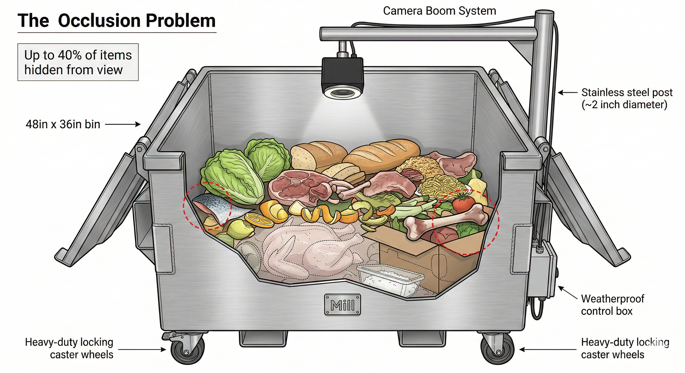
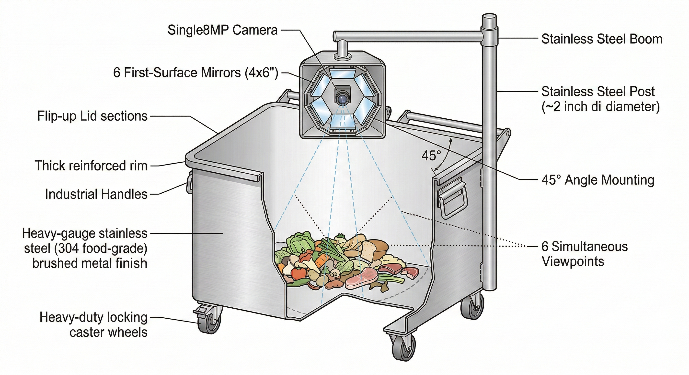
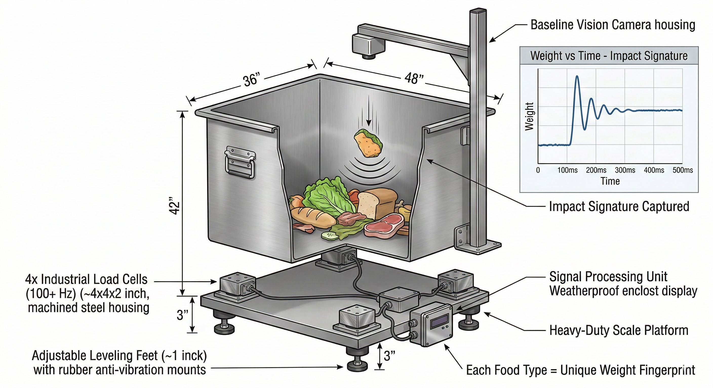
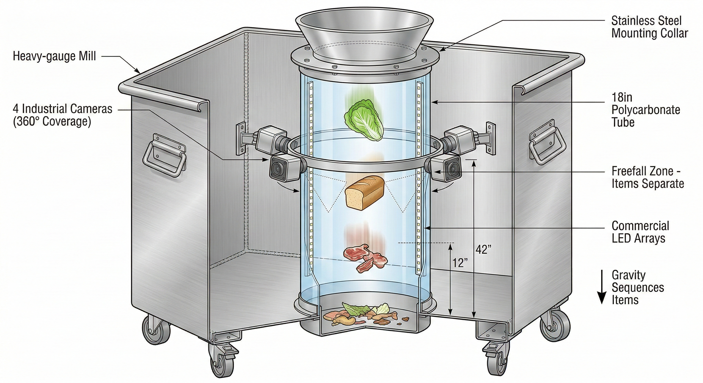

Evaluating CV approaches for Mill Commercial that maximize partial food accuracy while preserving core composting operations.
Mill Commercial needs to identify food waste accurately. But the CV system must work around Mill's core value: heating food waste and turning it into compost.
Half-eaten chicken, scraped rice, sauce-covered scraps. These don't look like reference images. This is our main accuracy challenge.
When a plate is scraped, items pile on top of each other. A single camera angle misses a huge portion of what's thrown away.
Kitchen staff can't slow down. Any system that changes their workflow will fail. The bin must work exactly like a normal bin.
Below 85%, the data isn't actionable for procurement. False positives erode trust. We need high confidence.

Mill's core operation happens inside the bin: heating food waste and converting it to compost. Any CV solution must be external - it cannot obstruct the interior, interfere with heating, or require modifications that affect composting. The camera boom system stays outside. Load cells go underneath. Nothing goes inside.
The best solution combines two external sensing approaches. Neither interferes with composting operations, and together they address partial food accuracy through multi-modal data fusion.
The Kaleidoscope mirror array captures 6 angles simultaneously. Multiple views help identify partial foods that are unrecognizable from one angle but clear from another. All from a single boom-mounted camera.
The Weighmaster load cells capture impact signatures at 100+ Hz. Chicken has different density than bread has different density than rice. Weight data validates and corrects vision classification.
Mirrors mount on the camera boom. Load cells go under the bin. Zero interference with heating/composting. The interior remains completely unobstructed.
Vision alone hits 85-92%. Adding weight signatures for sensor fusion pushes accuracy into the 92-97% range - especially for partial foods where visual classification is ambiguous.

Mirror Multi-Angle System
Six first-surface mirrors arranged around the camera lens capture 6 simultaneous viewing angles in a single frame. A half-eaten chicken breast might be unrecognizable from above but clearly identifiable from a 45-degree angle. Multiple perspectives dramatically improve partial food recognition - all from the existing boom-mounted camera.

High-Frequency Weight Dynamics
Four industrial load cells under the bin sample at 100+ Hz, capturing "impact signatures" when items are dropped. Each food type creates a unique weight fingerprint - the curve of impact, oscillation, and settling. A partial chicken breast still weighs like chicken. This data validates or corrects vision when appearance is ambiguous.

Drop-Through Tunnel (Not Recommended)
A vertical polycarbonate tube inside the bin where items freefall past cameras. Gravity separates items naturally. Highest potential accuracy (92-97%) but comes with a critical problem: the tube occupies interior space needed for heating and composting.
Instead of "always on" video, use weight changes to trigger high-speed burst capture.
Camera runs continuously, watching for new items. High data volume, constant processing, may miss fast dumps, power hungry.
Load cells detect weight increase → triggers 0.5s high-speed burst capture → captures before/during/after states. Lower power, precise timing, diff analysis possible.
Don't over-engineer at launch. Deploy with good-enough hardware, learn from real data, and make data-driven upgrade decisions.
A half-eaten chicken breast doesn't look like a whole chicken breast. But it still weighs like chicken (density) and is made of protein (chemistry). Visual appearance is unreliable for partial foods. Density and chemistry are invariant. This is why we fuse vision with weight, and why NIR is the upgrade path.
Kaleidoscope + Weighmaster. Best ROI: +$200 hardware for 92-97% accuracy. Launched with human-in-the-loop learning.
Kaleidoscope + Weighmaster + NIR. Full sensor suite. Overkill for launch but available as upgrade path.
Baseline vision + NIR spectral. Skips weight, adds chemistry. Higher cost but simpler fusion model.
Weight-triggered burst capture instead of always-on. Load cells detect dump → 0.5s high-speed capture.
Evaluated against the core constraint: solutions must be external and cannot interfere with heating/composting.
| Approach | External? | Partial Food Help | Accuracy | Notes |
|---|---|---|---|---|
| Kaleidoscope + Weighmaster | Yes | High | 92-97% | Recommended combo. Multi-angle vision + weight signatures. Both fully external. |
| Kaleidoscope alone | Yes | Medium | 85-92% | Boom-mounted mirrors. Multiple angles help partial foods. Cheap (~$50). |
| Weighmaster alone | Yes | Medium | 55-70% | Under-bin load cells. Best as fusion layer, not standalone. |
| Baseline (structured light) | Yes | Low | 85-92% | Current plan. Single angle, occlusion remains a problem. |
| Fingerprinter (NIR) | Yes | High | 80-92% | Identifies by chemistry not appearance. Good for sauce-covered items. +25% cost. |
| Listener (acoustic) | Yes | Low | 50-70% | Impact sounds. Cheap add-on (+2%). Kitchen noise is a challenge. |
| Heat Map (thermal) | Yes | Low | 60-75% | Fresh waste is warm. Helps segmentation. Cold waste from fridge breaks it. |
| Photo Booth (tunnel) | No - Interior | Highest | 92-97% | Best accuracy but tube obstructs interior. Conflicts with heating/composting. |
| Tumbler (sieve) | No - Interior | High | 88-94% | Rotating sieve separates items. Mechanical complexity, jamming risk. |
| Cascade (conveyor) | No - Interior | High | 90-95% | Mini conveyor spreads items. Major interior modification. |
| Scanner (capacitive) | Walls | Low | 40-55% | Antenna in walls. Sees through pile but low food differentiation. |
| Penetrator (radar) | Yes | Low | 50-65% | mmWave sees buried items. Limited resolution for food classification. |
| Polarizer | Yes | Low | 70-85% | Cuts glare, differentiates organic/plastic. Niche benefit, high cost. |